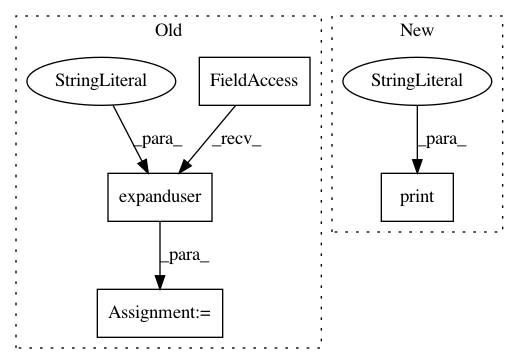

749855e9d1b5bd1aa7b46db144503922fbc0a336,doc/examples/brain_extraction_dwi.py,,,#,8
Before Change
fetch_scil_b0()
dipy_home = pjoin(os.path.expanduser("~"), ".dipy")
files = [dipy_home+"/datasets_multi-site_all_companies/3T/GE/b0.nii.gz",
dipy_home+"/datasets_multi-site_all_companies/3T/Siemens/b0.nii.gz",
dipy_home+"/datasets_multi-site_all_companies/3T/Philips/b0.nii.gz",
dipy_home+"/datasets_multi-site_all_companies/1.5T/GE/b0.nii.gz",
dipy_home+"/datasets_multi-site_all_companies/1.5T/Siemens/b0.nii.gz",
dipy_home+"/datasets_multi-site_all_companies/Stanford/b0.nii.gz"]
for f in files :
print(f)
img = nib.load(f)
After Change
well on most volumes. For this example, default parameters (4, 4) will be used.
print("Segmenting brain data from GE 3T b0 volume...")
from dipy.segment.mask import medotsu
b0_mask, mask = medotsu(data.copy(), 4, 4)
In pattern: SUPERPATTERN
Frequency: 3
Non-data size: 4
Instances
Project Name: nipy/dipy
Commit Name: 749855e9d1b5bd1aa7b46db144503922fbc0a336
Time: 2013-08-06
Author: matthieu.dumont@usherbrooke.ca
File Name: doc/examples/brain_extraction_dwi.py
Class Name:
Method Name:
Project Name: autorope/donkeycar
Commit Name: a894f3a89c57a0575d6ffecd50259cb219cd3477
Time: 2016-12-12
Author: wroscoe@gmail.com
File Name: manage.py
Class Name:
Method Name:
Project Name: autorope/donkeycar
Commit Name: 117fdd8c8d0e41218c11c4db6d179e39b85b9e3f
Time: 2017-02-28
Author: wroscoe@gmail.com
File Name: scripts/setup.py
Class Name:
Method Name: